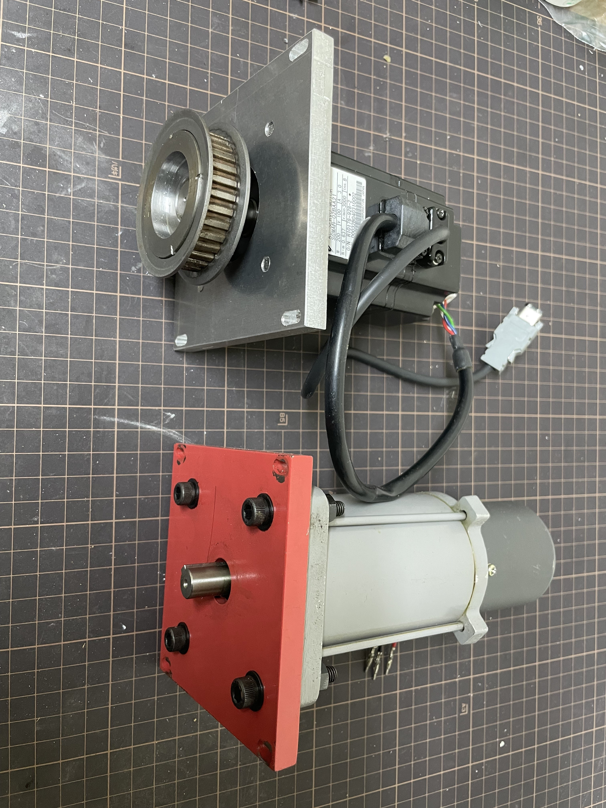
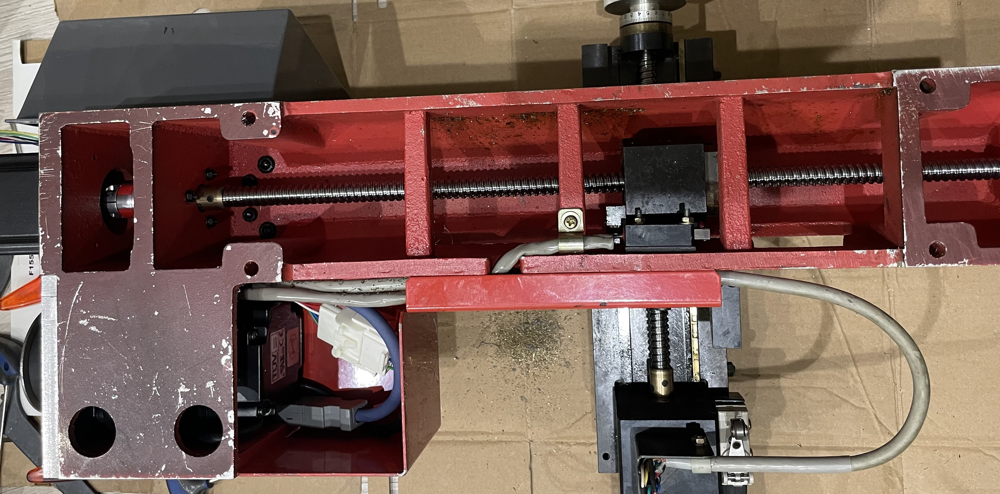
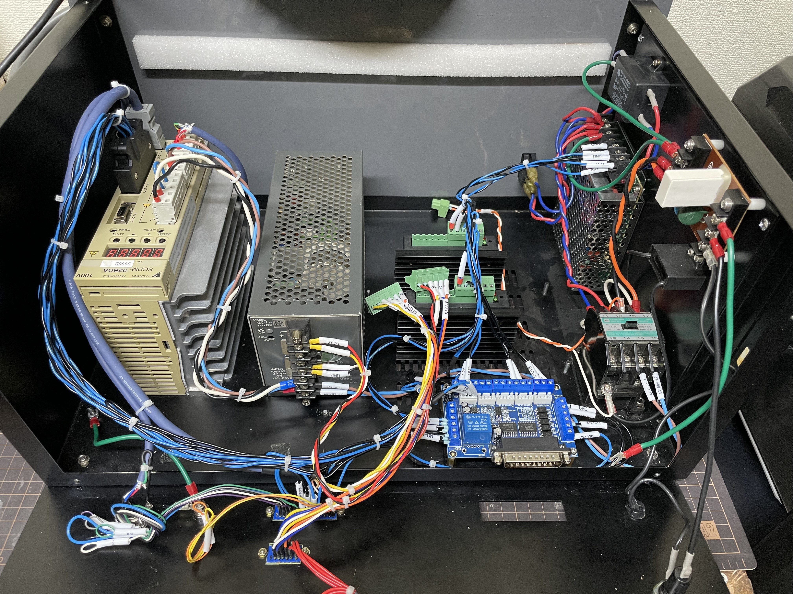
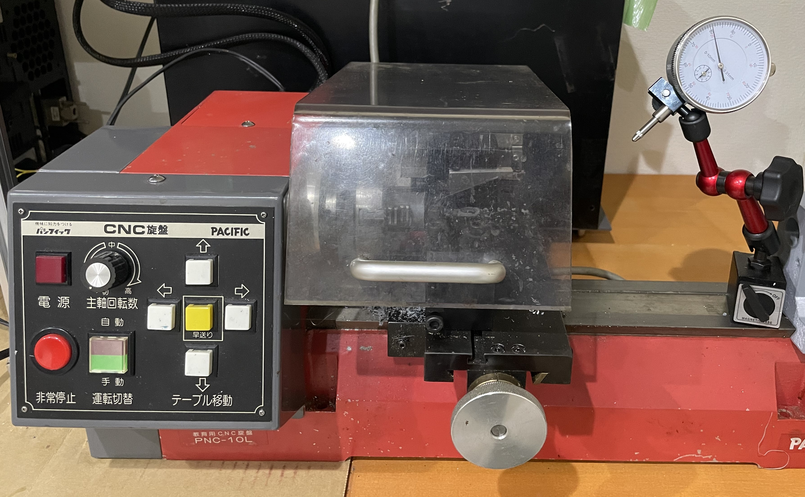

サービス内容
NC工作機械の性能を飛躍的に向上させる、当社のトータルアップグレードサービスです。

1. 主軸サーボモータ
YASKAWA 200W サーボモータへの交換により、主軸の応答性・トルク特性が向上。低速域からの安定した加工と消費電力削減を実現します。

2. X Y軸ボールねじに交換
高精度ボールねじに交換し、バックラッシを最小限に抑制。位置決め精度と繰り返し精度が大幅に向上し、微細加工が可能になります。

3. 更新LinuxCNC ネットワークモーションカード
オープンソースCNC「LinuxCNC」とFPGAベースのネットワークモーションカードを導入。リアルタイムOS上で動作し、高速・高応答な制御と安定した加工を実現します。

4. 位置決め精度
各軸の位置決め精度・繰り返し精度を検証。性能を保証します。
※画像はイメージです。実際の作業とは異なる場合があります。